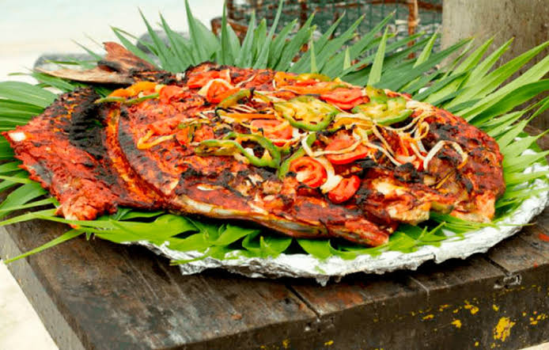

23.Quintana Roo

- Platillo: Tikin Xic
- Ingredientes: Pescado, achiote, jugo de naranja agria, plátano macho, hoja de plátano.
- Historia: Platillo de origen maya, su nombre significa “pescado seco o al horno” en lengua maya.
- Dato curioso: Se cocina tradicionalmente enterrado en horno de tierra o a la brasa.